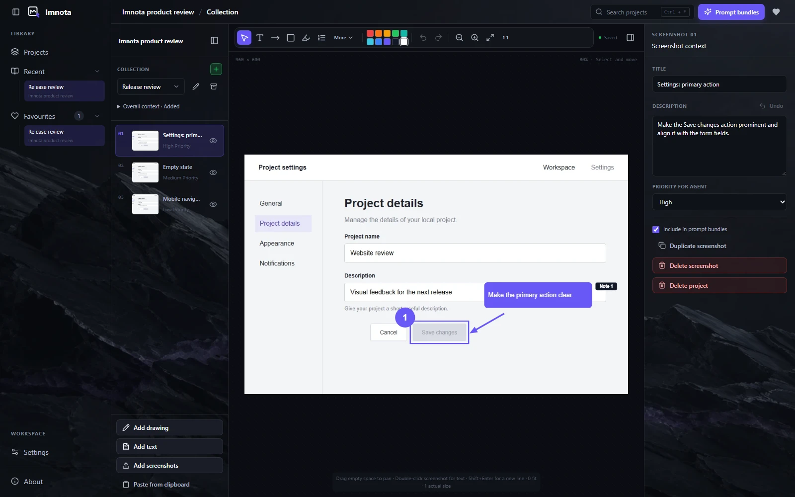
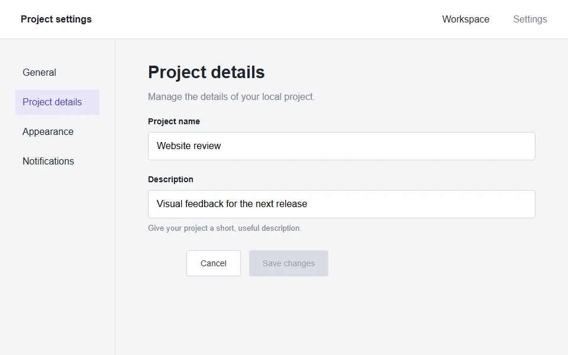
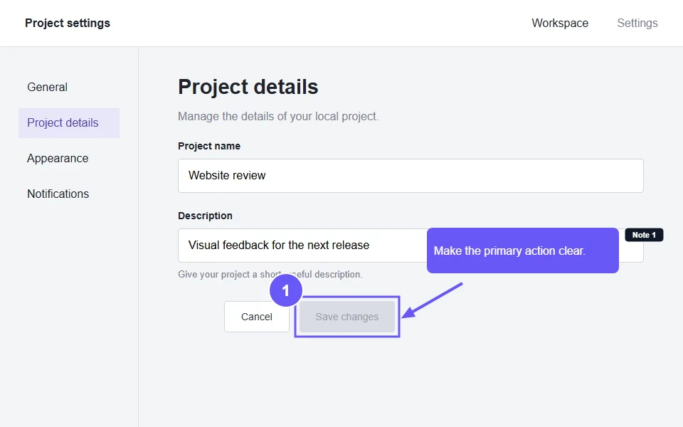
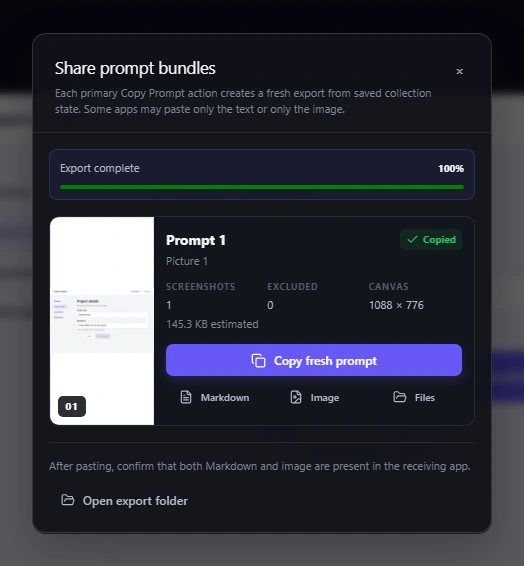
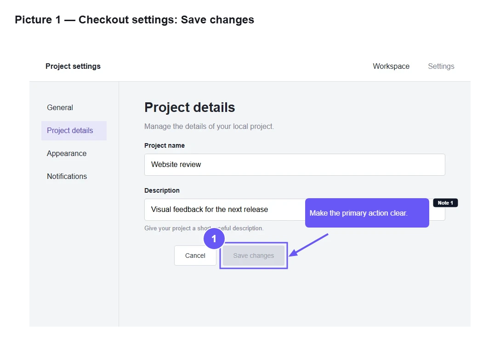
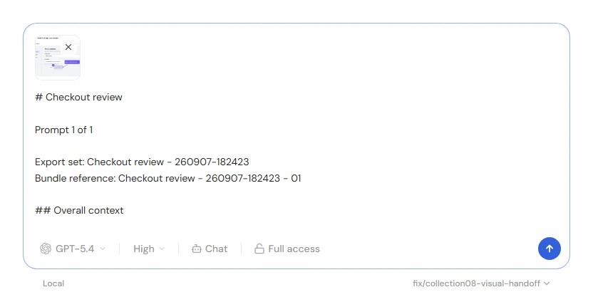
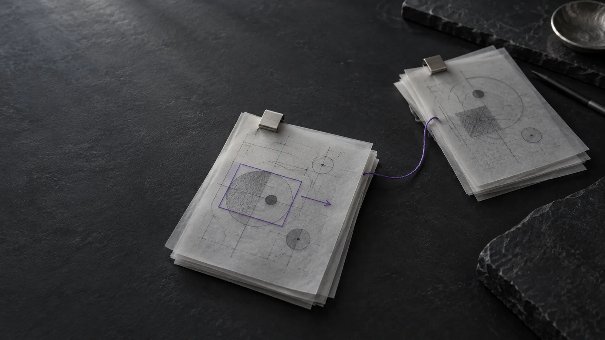

Screenshots that
AI
understands.
Annotate screenshots, sketch an idea or write it out. Bring it all together in a prompt bundle your coding agent can use.
Local-first desktop app. Open source. No account required.

# Release review
## Overall context
Review the interaction details before the next product release.
Priority for agent: High
Make the Save changes action prominent and align it with the form fields.
Give the picture a point.
A screenshot shows the symptom.
Your agent still needs the context.
A raw screenshot leaves the important parts implicit. What is wrong? What should change? Which part matters? Imnota helps you make it explicit, right in your local workflow.


From seeing it to explaining it.
Four steps. One clear handoff.
-
01
Collect
Import, paste or drop screenshots. Or start a standalone drawing or Markdown item.
PNGJPEGWebP -
02
Mark
Add arrows, lines, shapes, highlights, text, callouts, steps or sensitive-area masks.
-
03
Describe
Add collection context, screenshot descriptions and agent priority.
Priority for agentHigh -
04
Copy
Export timestamped Markdown and high-resolution PNG prompt bundles.
.md+.png
Less explaining around the image.
More context inside it.
{kind=link}

The actual prompt bundle
One picture. The context that goes with it.
The exported PNG keeps the annotations visible. Its Markdown companion carries the collection context, screenshot description, priority and callout notes.
{kind=link}

From Imnota to your coding tool
Image and instructions, in the same draft.
Here is the exported bundle in T3 Code: the image is attached and the Markdown is in the composer, ready to send.
This T3 version needs two pastes: Markdown first, then Image. Use Imnota’s separate copy actions when your editor accepts only one format at a time.
{kind=link}

New in stable 0.2.6
Your next handoff.
One link away.
Share a reviewed prompt bundle online, let recipients copy it in their browser, and manage your links from Settings. A refreshed workspace makes the next round easier to find and finish.
Read the 0.2.6 release notes
- Share a bundle by link
- Review the export, choose Share online and create an expiring link. Recipients can copy Markdown and PNG or download the ZIP from their browser.
- Find your way back
- Improved search, collection history and grouped favourites help you return to the right work. Sharing settings keep your links and revocation controls together.
- A clearer place to work
- Adaptive annotation tools, larger bundle previews and more readable light themes give your content room. New light and dark backdrops join the appearance options.
Sharing is optional. Local editing, copy and export work offline. Online sharing uploads the finalized bundle you approve; anyone with its link can open it until it expires or you revoke it.
Version 0.2.6 keeps the existing project format and improves edit preservation, interrupted-export recovery and Windows saves. Back up your workspace before upgrading.
From the first screenshot
to the final handoff.
Screenshots, standalone drawings and Markdown in one collection.
Annotate & refineArrows, callouts, steps, masks and non-destructive crops.
Add context & exportDescriptions and priorities travel with Markdown and PNG bundles.
Make it yoursLocal files, appearance controls and a choice of update channels.
Local-first, by design.
Your project stays a folder on your machine.
Plain files you can copy, back up and version-control. Keep your screenshots and context together, in a workspace you choose.
- No account required
- No cloud storage dependency
- No built-in AI provider connection
- No telemetry by default
- Portable JSON, Markdown and image files
- Source screenshots are not overwritten
- project.jsonProject metadata
-
collections/
-
001-collection/
- screenshots/
- annotations/
-
exports/
Markdown + PNG
-
001-collection/
Ready when you are.
Install Imnota.
Download the stable release for Windows, macOS or Linux. Or use the one-command installer below.
Browse all releasesMIT licensed. Yours to inspect.
Built in the open,
designed for real workflows.
An open-source screenshot annotation tool built with Electron, React and TypeScript. Desktop targets for Windows, macOS and Linux. Read the code, build it yourself or contribute a focused improvement.
A few practical answers.
Does Imnota upload my screenshots?
Local editing, copy and export use files on your machine. Optional Share online uploads only the finalized PNG and Markdown bundle you review and approve, not your editable project folder. Anyone with the link can open it until it expires or you revoke it.
Do I need an AI account to use it?
No. Imnota has no account requirement and no built-in AI provider connection. It prepares context for the assistant or coding agent you already use.
Which operating systems are supported?
Imnota’s development and packaging targets are Windows, macOS and Linux. Check the latest release for available desktop downloads.
What does the export contain?
A fresh, timestamped export in collection order, with Markdown and high-resolution PNGs for visual items. Text-only collections export Markdown without placeholder images. The Markdown includes collection context, screenshot descriptions, agent priorities and text or callout notes. Large collections may split automatically. You can copy Markdown, image or both, depending on what your receiving editor accepts.
Can I build Imnota from source?
Yes. You need Node.js 20+, Corepack and a platform-supported Electron environment. Follow the manual build instructions or the development README.
Is Imnota Apple-notarised?
The current release is not Apple-notarised. The README explains how to open it through System Settings, Privacy & Security, Open Anyway. Read the macOS installation guidance. Do not disable Gatekeeper.